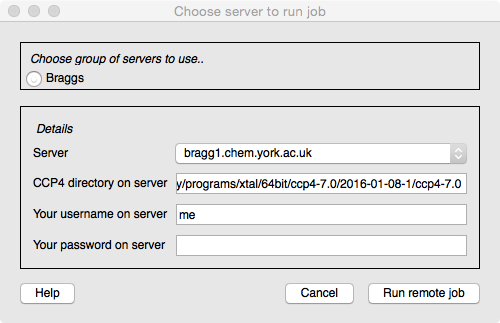
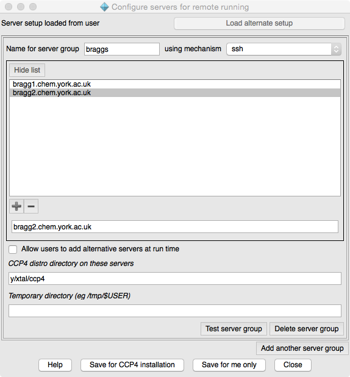

CCP4i2 — Running CCP4i2 Job on a Server¶
Introduction¶

CCP4i2 usually runs jobs on the user’s computer but can also send jobs to a server. The CCP4i2 installation must first be configured to know about the available servers (this should usually be done by whoever installs CCP4i2) and then a ‘Run on server’ option will appear in the Project Viewer toolbar. When you click this option you will see a window with, at the top, a selection from one or more groups of servers and then a pull-down menu to choose the server machine. CCP4i2 needs to know the installation directory for CCP4 on the server machine but this is usually already provided and you then need to enter your user name and password on the server. You will not need to enter any of these details again in this CCP4i2 session. The password is not saved anywhere.
CCP4i2 polls the remote running job at regular intervals to retrieve the current status and data to display in the ‘running’ report and to check if the job has finished. You can check if a server job is still running using the Running jobs and processes option on the Utilities menu. This will list the jobs running on your local machine and any server that you are using. For each job it should list a ‘ccp4i2’ process that is the controlling process and one or more child processes that are the running programs.
Overview of mechanism¶
CCP4i2 uses different mechanisms to run jobs on servers dependent on whether or not the client and server machines share a file system and whether they support job queues. All current mechanisms assume that the servers are running Linux.
Where server and client are part of a Linux cluster they are often set up with a shared filesystem and there is no need to transfer files to and from the server. If there is not a shared file system (certainly the case if the client is a Mac or Windows PC) then files must be copied and this is done by creating and copying a ‘jobball’ which is a zip file containing a small fraction of the users project directory with the directory structure of the project directory and just the necessary files to run the job. When the job has finished on the server another jobball, now containing the output files, is created and returned.
Running on a server uses a temporary database local to the server. This is true even if there is a shared file system - it is necessary to avoid potential issues with the database locking mechanism over NFS file systems. So, when running a server job a small fragment of the database is exported (as an XML file) and copied to the server where it is used to initialise the temporary database. When the job finishes the temporary database will contain information on the jobs run and files created and this is exported as XML and returned to the client machine to be reintegrated into the user’s database.
The Grid Engine system supports the idea of submit hosts (from which a job can be submitted) and execution hosts (on which the job is run) and this will be set up by your system manager. Ideally your working machine should be a submit host so CCP4i2 can just submit a job on your working machine and the Grid Engine deals with communication to an execution host. If your working machine is not a submit host then CCP4i2 can be configured to use qsub on another machine or qsub with shared file system where CCP4i2 uses ssh tools to copy files and submit a qsub job on another machine.
Configuring running on a server¶
The Configure servers option can be found as part of the Utilities menu option for System administrator tools. The setup can be for an individual user (saved in their home directory .CCP4I2/configs/serverSetup.params.xml) or for all users of the CCP4i2 installation (saved in ccp4/shared/ccp4i2/local_setup/serverSetup.params.xml).

At the top of the Configure servers window it tells you the current context and has the option to load the alternative file if it is present.
You can configure one or more groups of servers. A group of servers have similar properties. For each server group you should enter a name and choose the mechanism (see Overview of mechanisms above). You can then enter a list of available server machines (note: use the +/- below the list to add/remove lines in the list, enter the server address in the text entry box below the list). If you want to allow users to add server addresses then check the next box. You need to provide the directory path for the CCP4 installation on the server machine - the user can enter or edit this a run time but it is preferable that they do not need to. If the mechanism does not use a shared file system then you must provide a directory path for temporary files. If the path includes the user name (which will be entered by the user at run time) this should be entered as ‘$USER’.
There is an option for each server group to Test server group. For each machine in the server group it will make an ssh connection and test the existance of the CCP4 installation directory and the temporary directory. You will be required to provide an login name and password for the server machines.
The qsub queuing mechanism has many options (see documentation). Options can be placed in a file and if an option file exists then CCP4i2 will invoke it when using qsub. The option file can be either $CCP4/share/ccp4i2/local_setup/qsub_options applied for all users of the CCP4 installation or $HOME/.CCP4I2/configs/qsub_options for a single user.
At the bottom of the window, the parameters can be saved for either user or installation; if the user does not have write permission for the installation this option will not be presented.
Computer setups and requirements are very variable - if the above mechanisms are not ideal for you please contact CCP4 describing your setup and preferred mechanism for using servers.
Running jobs on a server from scripts¶
The Job controller in CCP4i2 controls the running of jobs either on the local machine or a server machine. Within the CCP4i2 gui the Job controller works by polling the database for jobs that have been tagged as waiting to run. To run a job on a server (rather than locally) the server parameters described above must previously have been set for the jobId in the Job controller.
The server parameters are held by the CCP4JobController.CServerParams class which presently is just:
class CServerParams:
def __init__(self,**kw):
self.machine = kw.get('machine',None)
self.username = kw.get('username',None)
self.password = kw.get('password',None)
self.ccp4Dir = kw.get('ccp4Dir',None)
self.tempDir = kw.get('tempDir',None)
self.mechanism = kw.get('mechanism',None)
These parameters can be set in the Job controller and the job started by:
from qtcore import CCP4JobController
from core import CCP4Modules
params =CCP4JobController.CServerParams(machine='xxx.xxx.xxx',ccp4Dir='/y/xtal/ccp4',
mechanism='ssh_shared',username='me',password='secret')
CCP4Modules.JOBCONTROLLER().setServerParams(jobId,params)
CCP4Modules.JOBCONTROLLER().runOnServer(jobId)
The jobId is a Python string representation of the databases uuid (universal unique identifier).
Last modified: Tue Aug 30 12:14:39 BST 2016